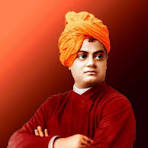

SWAMI VIVEKANANDA
1863-1902
Maker Of Modern India.
Swami Vivekananda was a great philosopher, Hindu monk, and spiritual
leader who believed in the mantra of simple living and high thinking. He
was born on January 12 in a traditional Bengali family in Kolkata. Swami
Vivekananda moved the world with his discourse of modern Vedanta and Raj
Yoga at a very early age. He was well-versed in all Hindu scriptures
like Ramayana, Geeta, Mahabharata, Vedas, and Upnishads. He had a
profound knowledge of multiple subjects like History, Bengali
literature, Sanskrit, and so on. Inspired by Sri Ramakrishna, Swami
Vivekananda embraced him as his guru and embarked on his spiritual and
philosophical journey to enlighten the world. He established the
Ramakrishna Mission to provide aid to the poor and distressed. Swami
Vivekananda introduced the western people to Indian culture,
spirituality, philosophy, the practice of meditation, and Hindu
religion. He got global recognition following his famous speech in
Chicago. He left the world on the 4th of July, 1902 while meditating.
Biographies
- Swami Vivekananda had a strong memory since his childhood.
- He had read all Hindu scriptures like Vedas, Upanishads, Bhagwat Geeta, Ramayana, and Mahabharata.
- He was about 25 years old when he became a monk.
- His speech in Chicago made him globally famous.
- He followed his guru Ramakrishna throughout his life and took all his responsibilities after his death.
- He established the branches of Ramakrishna Mission also in other countries.
- Swami Vivekananda never allowed a woman to enter in his monasteries.
- People say that Swami Vivekananda suffered from 31 diseases.